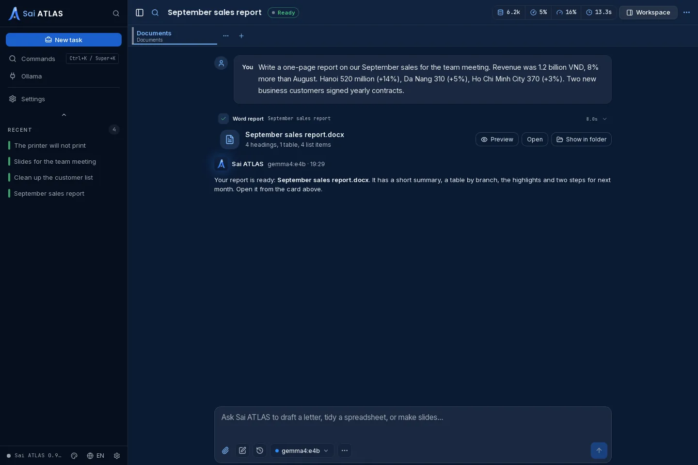
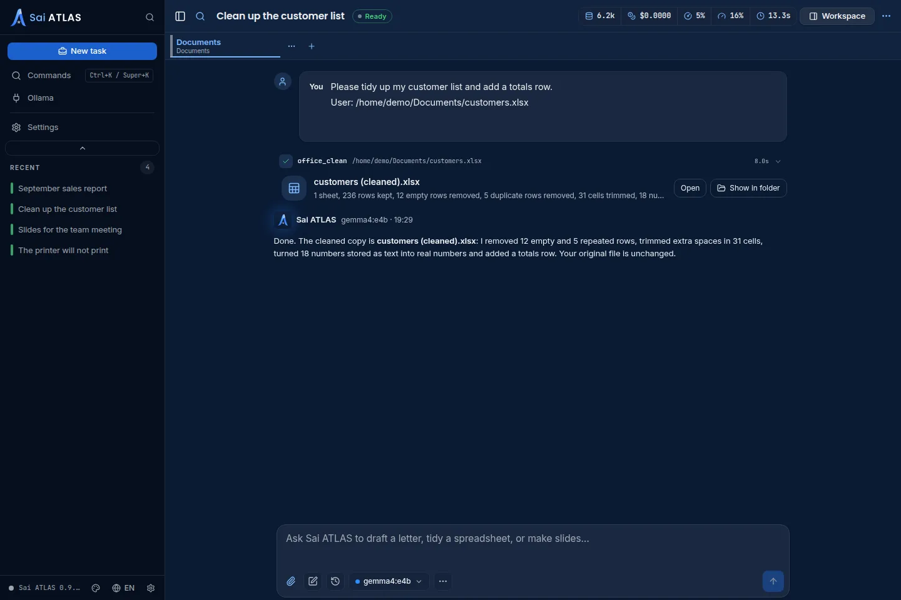
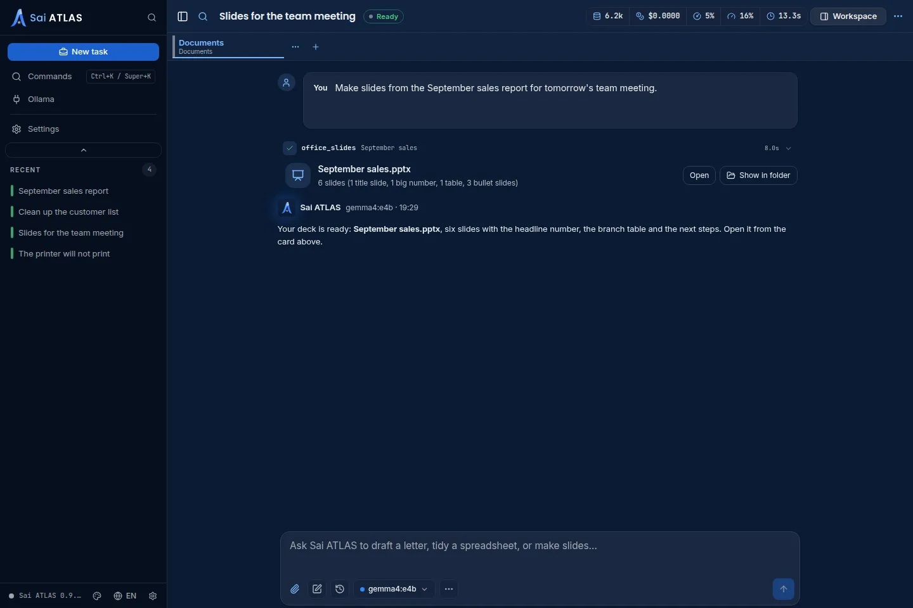

Write a Word report, clean up a spreadsheet, turn a report into slides, or get help when the computer misbehaves. Sai ATLAS runs on your own computer, answers in English or Vietnamese, and asks before it changes anything.
No account, no sign-in · models run through Ollama on this computer · All releases

Describe the report you need or paste your notes. Sai ATLAS writes it as a Word document with headings, lists and tables, ready to open and edit.
Rough notes become a clear report with a title, sections and a summary.
Saved in Documents > Sai ATLAS and opened from the card in the conversation.
Attach an Excel, LibreOffice or CSV spreadsheet. Sai ATLAS makes a tidy copy and tells you what it fixed. Your original file is never changed.
Extra spaces, empty and repeated rows, and numbers stored as text.
Ask for a totals row and it is added under each sheet.

Give Sai ATLAS a report or an outline and it builds a PowerPoint deck: one idea per slide, with short points you can present.
Turn the report it just wrote, or one of your own, into slides.
Open it in PowerPoint or LibreOffice Impress and adjust it as you like.

Wi-Fi gone, no sound, the printer will not print, the screen looks wrong, Vietnamese typing stopped working? Tell Sai ATLAS what happened in your own words.
Sai ATLAS looks at the network, sound, printers, the screen, Bluetooth, storage, typing or updates before it suggests anything.
You get what it found in one or two sentences, without jargon.
It offers one fix at a time and changes nothing until you say yes. When a fix needs more, it writes a short note for whoever helps you next.
Your files and conversations stay on this computer. Sai ATLAS goes online only to download models and updates.
The AI runs through Ollama on this computer. Sai ATLAS does not use cloud models or an Ollama on another machine.
There is nothing to sign up for and nothing to sign in to.
New files go to Documents > Sai ATLAS. It never edits or deletes your own files.
Install Ollama from ollama.com, then grab the build for your computer. On first launch Sai ATLAS suggests a model that fits your machine and downloads it for you.
sudo apt install ./sai-atlas_<version>_amd64.deb; the AppImage needs libwebkit2gtk-4.1-0. Building from source is described in the README.